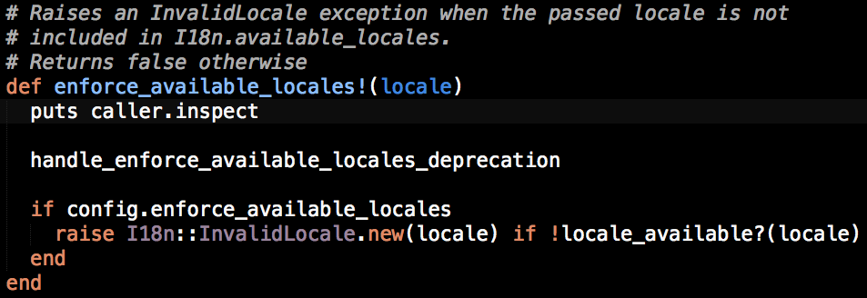

I just updated to rails 4.0.2 and I'm getting this warning:
[deprecated] I18n.enforce_available_locales will default to true in the
future. If you really want to skip validation of your locale you can set
I18n.enforce_available_locales = false to avoid this message.
Is there any security issue in setting it to false?
Answer
Important : Make sure your app is not using I18n 0.6.8, it has a bug that
prevents the configuration to be set correctly.
Short answer
In order to silence the warning edit the application.rb file and include the
following line inside the Rails::Application body
config.i18n.enforce_available_locales = true
The possible values are:
-
false : if you
- want to skip the locale validation
- don't care about locales
-
true : if you
- want the application to raise an error if an invalid locale is passed (or)
- want to default to the new Rails behaviors (or)
- care about locale validation
Note:
- The old default behavior corresponds to
false, not true.
- If you are setting the
config.i18n.default_locale configuration or other i18n settings, make sure to do it after setting the config.i18n.enforce_available_locales setting.
- If your use third party gems that include I18n features, setting the variable through the Application
config object, may not have an effect. In this case, set it directly to I18n using I18n.config.enforce_available_locales.
Caveats
Example
require File.expand_path('../boot', __FILE__)
# ...
module YouApplication
class Application < Rails::Application
# ...
config.i18n.enforce_available_locales = true
# or if one of your gem compete for pre-loading, use
I18n.config.enforce_available_locales = true
# ...
end
end
Long answer
The deprecation warning is now displayed both in Rails 4 (>= 4.0.2) and Rails
3.2 (>= 3.2.14). The reason is explained in this commit.
Enforce available locales
When I18n.config.enforce_available_locales is true we'll raise an
I18n::InvalidLocale exception if the passed locale is unavailable.
The default is set to nil which will display a deprecation error.
If set to false we'll skip enforcing available locales altogether (old
behaviour).
This has been implemented in the following methods :
- I18n.config.default_locale=
- I18n.config.locale=
- I18n.translate
- I18n.localize
- I18n.transliterate
Before this change, if you passed an unsupported locale, Rails would silently
switch to it if the locale is valid (i.e. if there is a corresponding locale
file in the /config/locales folder), otherwise the locale would default to
the config.i18n.default_locale configuration (which defaults to :en).
The new version of the I18n gem, forces developers to be a little bit more
conscious of the locale management.
In the future, the behavior will change and if a locale is invalid, the Rails
app will raise an error.
In preparation of such change (that may potentially break several applications
that until today were relying on silent defaults), the warning is forcing you
to explicitly declare which validation you want to perform, during the current
transition period.
To restore the previous behavior, simply set the following configuration to
false
config.i18n.enforce_available_locales = false
otherwise, set it to true to match the new Rails defaults or if you want to be
more rigid on domain validation and avoid switching to the default in case of
invalid locale.
config.i18n.enforce_available_locales = true
Caveat
-
If you are setting the config.i18n.default_locale configuration or using any of the previously mentioned methods (default_locale=, locale=, translate, etc), make sure to do it after setting the config.i18n.enforce_available_locales setting. Otherwise, the deprecation warning will keep on popping up. (Thanks Fábio Batista).
-
If you use third party gems that include I18n features, setting the variable through may not have effect. In fact, the issue is the same as described in the previous point, just a little bit harder to debug.
This issue is a matter of precedence. When you set the config in your Rails
app, the value is not immediately assigned to the I18n gem. Rails stores each
config in an internal object, loads the dependencies (Railties and third party
gems) and then it passes the configuration to the target classes. If you use a
gem (or Rails plugin) that calls any of the I18n methods before the config is
assigned to I18n, then you'll get the warning.
In this case, you need to skip the Rails stack and set the config immediately
to the I18n gem by calling
I18n.config.enforce_available_locales = true
instead of
config.i18n.enforce_available_locales = true
The issue is easy to prove. Try to generate a new empty Rails app and you will
see that setting config.i18n in the application.rb works fine.
If in your app it does not, there is an easy way to debug the culprit. Locate
the i18n gem in your system, open the i18n.rb file and edit the method
enforce_available_locales! to include the statement puts caller.inspect.

This will cause the method to print the stacktrace whenever invoked. You will
be able to determine which gem is calling it by inspecting the stacktrace (in
my case it was Authlogic).
["/Users/weppos/.rvm/gems/ruby-2.0.0-p247@application/gems/i18n-0.6.9/lib/i18n.rb:150:in `translate'",
"/Users/weppos/.rvm/gems/ruby-2.0.0-p247@application/gems/authlogic-3.1.0/lib/authlogic/i18n/translator.rb:8:in `translate'",
"/Users/weppos/.rvm/gems/ruby-2.0.0-p247@application/gems/authlogic-3.1.0/lib/authlogic/i18n.rb:79:in `translate'",
"/Users/weppos/.rvm/gems/ruby-2.0.0-p247@application/gems/authlogic-3.1.0/lib/authlogic/acts_as_authentic/email.rb:68:in `validates_format_of_email_field_options'",
"/Users/weppos/.rvm/gems/ruby-2.0.0-p247@application/gems/authlogic-3.1.0/lib/authlogic/acts_as_authentic/email.rb:102:in `block in included'",
"/Users/weppos/.rvm/gems/ruby-2.0.0-p247@application/gems/authlogic-3.1.0/lib/authlogic/acts_as_authentic/email.rb:99:in `class_eval'",
"/Users/weppos/.rvm/gems/ruby-2.0.0-p247@application/gems/authlogic-3.1.0/lib/authlogic/acts_as_authentic/email.rb:99:in `included'",
"/Users/weppos/.rvm/gems/ruby-2.0.0-p247@application/gems/authlogic-3.1.0/lib/authlogic/acts_as_authentic/base.rb:37:in `include'",
"/Users/weppos/.rvm/gems/ruby-2.0.0-p247@application/gems/authlogic-3.1.0/lib/authlogic/acts_as_authentic/base.rb:37:in `block in acts_as_authentic'",
"/Users/weppos/.rvm/gems/ruby-2.0.0-p247@application/gems/authlogic-3.1.0/lib/authlogic/acts_as_authentic/base.rb:37:in `each'",
"/Users/weppos/.rvm/gems/ruby-2.0.0-p247@application/gems/authlogic-3.1.0/lib/authlogic/acts_as_authentic/base.rb:37:in `acts_as_authentic'",
"/Users/weppos/Projects/application/app/models/user.rb:8:in `<class:User>'",
"/Users/weppos/Projects/application/app/models/user.rb:1:in `<top (required)>'",
Suggest
Just for completeness, note that you can also get rid of the warning by
setting I18n.enforce_available_locales to true (or false) in
config/application.rb:
require File.expand_path('../boot', __FILE__)
.
.
.
module SampleApp
class Application < Rails::Application
.
.
.
I18n.enforce_available_locales = true
.
.
.
end
end